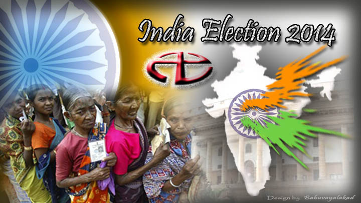

India elections 2014

Click here for Kerala Panchayat Election 2020 date
click here for India Elections 2019 dates
click here for India Elections 2019 info
india elections 2014 results details
In the history of world the biggest and the most splendid democratic process is to be followed by the coming months in India.Our attempt is to convey the informations about this democratic process to all the democratic lovers in the world.With a hope of peaceful democracy in other countries as well as India,here we approach you all.
india elections exit polls 2014 results
Loksabha general election 2014 date
Loksabha general election 2014 will be held from April 07 to May 12 in 2014 [read more]
Loksabha general election 2014 schedule
Loksabha general election 2014 is held from April 07 to May 12 in 2014 as 9 phases [read more]
kerala Loksabha general election 2014 Poll Percentage results
2014 - The election year in India
Besides the loksabha election from April 16 onwards Indis is preparing for state assembly elections in 2014.
ndtv India elections 2014 latest survey
India elections latest news
The new trend on india elections is the discussion about the schedule for assembly elections in five states of Delhi, Rajasthan, Madhya Pradesh, Chhattisgarh and Mizoram,announced as on Oct 4 .
It is the new experimental approach, 'None of the above' (NOTA) option for the first time in the history of india elections in the upcoming polls in these five states .It is also to be noted that assembly elections in Chhattisgarh will held polls in two phases - Nov 11 and Nov 19 and the Other four states will be held in one phase,Assembly elections in Delhi, Madhya Pradesh, Rajasthan, Mizoram will be held on Dec 4, Nov 25, Dec 1 and Dec 4 respectively. Counting of all assembly elections in all five states will be held on Dec 8, 2013. Two by-elections in Gujarat and Tamil Nadu will be held on Dec 4.
Tweet
Indian parliament election 2014
General Election : (Parliamentary elections) In General Elections, the candidates are elected for the Lok Sabha and they are called MP's (Member of Parliament). They are held every 5 years. The India election 2014 will be the next election to the 16th Loka Sabha (Indian parliament)
Indian state assembly elections 2014
Assemby Election: (Legislative elections) The State Assembly elections in India are the elections in which the Indian electorate choose the members of the Vidhan Sabha (or Legislative/State Assembly). They are held every 5 years and the members of the legislative assembly are called MLA's. The India state assembly election 2014 more